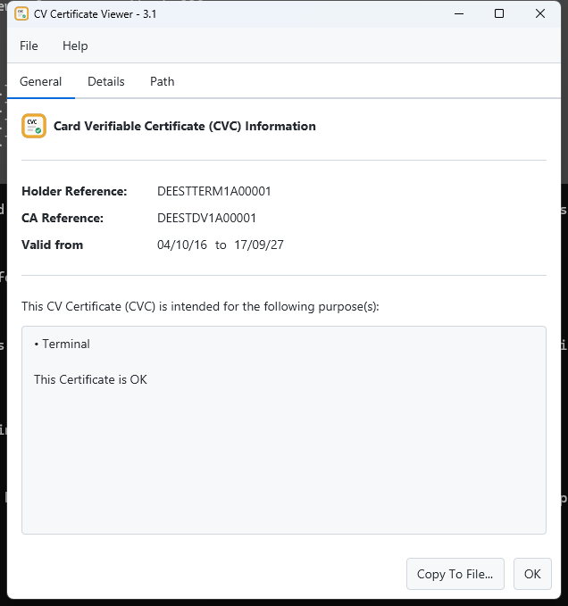
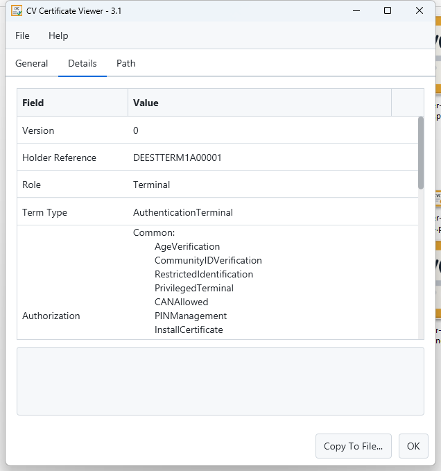
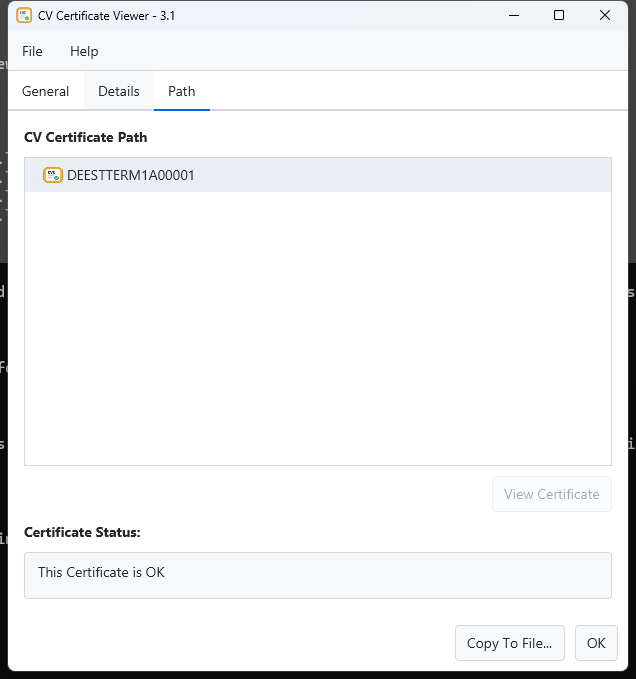

A free, open-source desktop utility to view and inspect Card Verifiable Certificates (CVC) — the specialized digital certificates defined in BSI TR-03110 and used across the EU EAC ecosystem for ePassports, eIDs, and inspection systems.
Features
Everything you need to inspect a CV certificate, without assuming X.509 semantics.
BSI TR-03110 certificates
Full support for CV Certificates, CV Link Certificates, CV Requests, and Authenticated Requests.
Format-agnostic parsing
Loads raw DER, Base64 (single or comma-separated), and PEM-style inputs automatically.
Certificate chains
Inspect full chains such as CVCA → DV → Terminal, with a dedicated Path view and per-node validity status.
RSA & ECDSA
PKCS#1 v1.5 and PSS for RSA, plus ECDSA — SHA-1, SHA-256, and SHA-512 across the board.
Drag & drop
Drop a certificate file straight onto the window, or open it from the file chooser or command line.
Light, dark, or system theme
A modern JavaFX + AtlantaFX interface that follows your OS appearance, or your own choice.
Screenshots
General, detail, and certificate-path views.



Download
Two flavors for every platform: a self-contained installer (bundles its own Java runtime) or a smaller portable build that uses a system-installed Java 17+.
All builds are produced automatically from source by GitHub Actions. See the README for full installation instructions per platform.